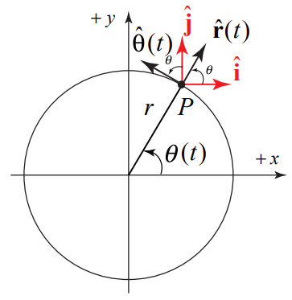
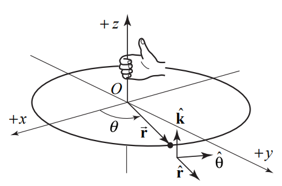

We have introduced the concepts of position, velocity and acceleration to describe motion in one dimension; however we live in a multidimensional universe.
To do that, we must extend our definitions of position, velocity, and acceleration for an object that moves in two dimensions by treating each direction independently, which we can do with vector quantities by resolving each of these quantities into their components defined by the basis vectors. For example, our definition of velocity as the derivative of position holds for each component separately. In Cartesian coordinates, the position vector r⃗(t) with respect to some choice of origin for the object at time t is given by
$$\overrightarrow{\mathbf{r}}(t)=x(t) \hat{\mathbf{i}}+y(t) \hat{\mathbf{j}}$$
The velocity vector v⃗(t) at time t is the derivative of the position vector,
$$\overrightarrow{\mathbf{v}}(t)=\frac{d x(t)}{d t} \hat{\mathbf{i}}+\frac{d y(t)}{d t} \hat{\mathbf{j}} = v_{x}(t) \hat{\mathbf{i}}+v_{y}(t) \hat{\mathbf{j}} \nonumber$$
where $v_{x}(t) =\dfrac{dx(t)}{dt}$ and $v_{y}(t) = \dfrac{dy(t)}{dt}$ denote the x - and y -components of the velocity respectively. The acceleration vector a⃗(t) is defined in a similar fashion as the derivative of the velocity vector,
$$\overrightarrow{\mathbf{a}}(t)=\frac{d v_{x}(t)}{d t} \hat{\mathbf{i}}+\frac{d v_{y}(t)}{d t} \hat{\mathbf{j}} = a_{x}(t) \hat{\mathbf{i}}+a_{y}(t) \hat{\mathbf{j}}$$
where $a_x(t)=\dfrac{dv_x(t)}{dt}$ and $a_y(t)=\dfrac{dv_y(t)}{dt}$ denote the x- and y-components of the acceleration.
The natural way we should start two dimensional motion should be projectile motion. However, we have discussed projectile motion last year and redundancy would not suffice, hence we will be moving forward with the next common topic in 2D motion, which is circular motion.
A special class of motions, motion in a plane about a central point, a motion we shall refer to as central motion, the most outstanding case of which is circular motion.
Let’s begin by describing the kinematics of circular motion. We see that unlike linear motion, where velocity and acceleration are directed along the line of motion, in circular motion the direction of velocity is always tangent to the circle. This means that as the object moves in a circle, the direction of the velocity is always changing. We also see that the direction of the change of the velocity is towards the center of the circle. This means that there is a non-zero component of the acceleration directed radially inward, which is called the centripetal acceleration. If our object is increasing its speed or slowing down, there is also a non-zero tangential acceleration in the direction of motion. But when the object is moving at a constant speed in a circle then only the centripetal acceleration is non-zero.
Twenty years before Newton published Principia Mathematica, he realized that the moon is always “falling” towards the center of the earth; otherwise, by the First Law, it would continue in some linear trajectory rather than follow a circular orbit. Therefore there must be a centripetal force, a radial force pointing inward, producing this centripetal acceleration.
When an object is constrained to move in a circle, there must exist a force F⃗ acting on the object directed towards the center. Because Newton’s Second Law is a vector equality, the radial component of the Second Law is
Fr = mar
Let’s start with the kinematics of circular motion. We begin our description of circular motion by choosing polar coordinates(because they are obviously much better in this sense). In the figure below we sketch the position vector $\vec{r(t)}$ of the object moving in a circular orbit of radius r.

At time t, the particle is located at the point P with coordinates (r, θ(t)) and position vector given by
$$\overrightarrow{\mathbf{r}}(t)=r \hat{\mathbf{r}}(t)$$
At the point P, consider two sets of unit vectors (r̂(t), θ̂(t)) and (î, ĵ), as shown in the figure above. The vector decomposition expression for r̂(t) and θ̂(t) in terms of î and ĵ is given by
$$\hat{\mathbf{r}}(t)=\cos \theta(t) \hat{\mathbf{i}}+\sin \theta(t) \hat{\mathbf{j}}$$
$$\hat{\boldsymbol{\theta}}(t)=-\sin \theta(t) \hat{\mathbf{i}}+\cos \theta(t) \hat{\mathbf{j}}$$
To calculate the velocities, we should compute the derivative of the functions above. For the first one($\vec{\mathbf{v}}(t)=\dfrac{d\vec{r}(t)}{dt}$),
$$\begin{array}{l}
\frac{d \hat{\mathbf{r}}(t)}{d t}=\frac{d}{d t}(\cos \theta(t) \hat{\mathbf{i}}+\sin \theta(t) \hat{\mathbf{j}})=\left(-\sin \theta(t) \frac{d \theta(t)}{d t} \hat{\mathbf{i}}+\cos \theta(t) \frac{d \theta(t)}{d t} \hat{\mathbf{j}}\right) \\
=\frac{d \theta(t)}{d t}(-\sin \theta(t) \hat{\mathbf{i}}+\cos \theta(t) \hat{\mathbf{j}})=\frac{d \theta(t)}{d t} \hat{\mathbf{\theta}}(t)
\end{array} \nonumber$$
For the second vector, which is $\vec{\boldsymbol{\omega}}=\dfrac{d\hat{\boldsymbol{\theta}}(t)}{dt}$,
$$\begin{array}{l}
\frac{d \hat{\boldsymbol{\theta}}(t)}{d t}=\frac{d}{d t}\left(-\sin \theta(t) \hat{\mathbf{i}}+\cos \theta(t \hat{\mathbf{j}})=\left(-\cos \theta(t) \frac{d \theta(t)}{d t} \hat{\mathbf{i}}-\sin (t) \frac{d \theta(t)}{d t} \hat{\mathbf{j}}\right)\right. \\
=\frac{d \theta(t)}{d t}(-\cos \theta(t) \hat{\mathbf{i}}-\sin \theta(t) \hat{\mathbf{j}})=-\frac{d \theta(t)}{d t} \hat{\mathbf{r}}(t)
\end{array} \nonumber$$
From the above relationship, we get the following expression below which gives us the velocity vector,
$$\overrightarrow{\mathbf{v}}(t)=\frac{d \overrightarrow{\mathbf{r}}(t)}{d t}=r \frac{d \hat{\mathbf{r}}}{d t}=r \frac{d \theta}{d t} \hat{\boldsymbol{\theta}}(t)=v_{\theta} \hat{\boldsymbol{\theta}}(t) \nonumber$$
where the $\hat{\boldsymbol{\theta}}$-component of the velocity is given by
$$v_{\theta}=r \frac{d \theta}{d t} \nonumber$$
v⃗(t) is referred to as the tangential component of the velocity. Denote the magnitude of the velocity by v = |v⃗|. The angular speed is the magnitude of the rate of change of angle with respect to time, which we denote by the Greek letter ω,
$$\omega \equiv\left|\frac{d \theta}{d t}\right| \nonumber$$
We can also geometrically derive the equations above which are left for you, the readers aka the students :).
When the motion of an object is described in polar coordinates, the acceleration has two components, the tangential component,aθ and the radial component, ar. We can write the acceleration vector as
$$\overrightarrow{\mathbf{a}}=a_{r} \hat{\mathbf{r}}(t)+a_{\theta} \hat{=\boldsymbol{\theta}}(t)$$
It is, however, important to note that the unit vectors r̂(t) and θ̂(t) change direction and hence are not constant in time.
Assuming that the tangential velocity $v_\theta=r\dfrac{d\theta}{dt}$ is changing in magnitude due to the presence of some tangential force; we consider that $\dfrac{d\theta}{dt}$ is changing in time, (the magnitude of the velocity is changing in time). Recall that in polar coordinates the velocity vector can be written as
$$\overrightarrow{\mathbf{v}}(t)=r \frac{d \theta}{d t} \hat{\boldsymbol{\theta}}(t)$$
We now use the product rule to determine the acceleration:
$$\overrightarrow{\mathbf{a}}(t)=\frac{d \overrightarrow{\mathbf{v}}(t)}{d t}=r \frac{d^{2} \theta(t)}{d t^{2}} \hat{\boldsymbol{\theta}}(t)+r \frac{d \theta(t)}{d t} \frac{d \hat{\boldsymbol{\theta}}(t)}{d t}$$
The equation above can be re-written as
$$\overrightarrow{\mathbf{a}}(t)=r \frac{d^{2} \theta(t)}{d t^{2}} \hat{\boldsymbol{\theta}}(t)+r \frac{d \theta(t)}{d t} \frac{d}{d t}(-\sin \theta(t) \hat{\mathbf{i}}+\cos \theta(t) \hat{\mathbf{j}})$$
Using the chain rule, we get the following result
$$\overrightarrow{\mathbf{a}}(t)=r \frac{d^{2} \theta(t)}{d t^{2}} \hat{\boldsymbol{\theta}}(t)+r \frac{d \theta(t)}{d t}\left(-\cos \theta(t) \frac{d \theta(t)}{d t} \hat{\mathbf{i}}-\sin \theta(t) \frac{d \theta(t)}{d t} \hat{\mathbf{j}}\right)$$
Which simplifies easily to the next result
$$\overrightarrow{\mathbf{a}}(t)=r \frac{d^{2} \theta(t)}{d t^{2}} \hat{\boldsymbol{\theta}}(t)-r\left(\frac{d \theta(t)}{d t}\right)^{2} \hat{\mathbf{r}}(t)$$
The tangential component of the acceleration(in the direction of θ̂) is then
$$a_{\theta}=r \frac{d^{2} \theta(t)}{d t^{2}}$$
The radial component of the acceleration(in the direction of r̂) becomes
$$a_{r}=-r\left(\frac{d \theta(t)}{d t}\right)^{2}=-r \omega^{2}$$
The negative sign in ar shows that the acceleration is always directed inwards, hence the centripetal acceleration.
One thing we know for sure because of Newton’s Second Law is that if an object is constrained to move in a circle and the total tangential force acting on it is zero, Fθtotal = 0 then, the tangential acceleration is zero ⟹ aθ = 0.
This means that the magnitude of the velocity (the speed) remains constant. This motion is known as uniform circular motion. The acceleration is then given by only the acceleration radial component vector,
$$\overrightarrow{\mathbf{a}}_{r}(t)=-r \omega^{2}(t) \hat{\mathbf{r}}(t)$$
Because the speed v = r|ω| is constant, the amount of time that the object takes to complete one circular orbit of radius r is also constant. This time interval, T , is called the period. In one period, the object travels a distance s = vT equal to the circumference, s = 2πr; thus
s = 2πr = vT
The period T is then given by
$$T=\frac{2 \pi r}{v}=\frac{2 \pi r}{r \omega}=\frac{2 \pi}{\omega}$$
We also know that the frequency, f, is defined to be the reciprocal of the period,
$$f=\frac{1}{T}=\frac{\omega}{2 \pi}$$
The magnitude of the radial component of the acceleration can be expressed in different forms since both the magnitudes of the velocity and angular velocity are related by v = rω. Thus, we have several alternative forms for the magnitude of the centripetal acceleration.
|ar| = rω2
$\left|a_{r}\right|=\dfrac{v^{2}}{r}$
|ar| = 4π2rf2, since ω = 2πf
$\left|a_{r}\right|=\dfrac{4 \pi^{2} r}{T^{2}}$, since f = 1/T = ω/2π
Often, we decide which expression to use based on information that describes the trajectory. An important measure might be the trajectory’s radius. We may also independently know the period, or the frequency, or the angular velocity, or the speed. If we know one, we can calculate the other three but it is important to understand the meaning of each quantity.
The next section is optional, but might be interesting for some of you. I definitely recommend reading it, because it does help visualize the quantities
We shall always choose a right-handed cylindrical coordinate system. If the positive z - axis points up, then we choose θ to be increasing in the counterclockwise direction as shown in the figure below:

For a point object undergoing circular motion about the z-axis, the angular velocity vector ω⃗ is directed along the z -axis with z -component equal to the time derivative of the angle θ,
$$\vec{\omega}=\frac{d \theta}{d t} \hat{\mathbf{k}}=\omega_{z} \hat{\mathbf{k}}$$
It is important to note that the angular speed is just the magnitude of the z -component of the angular velocity,
$$\omega \equiv\left|\omega_{z}\right|=\left|\frac{d \theta}{d t}\right|$$
If the velocity of the object is in the + θ̂-direction, (rotating in the counterclockwise direction), then the z -component of the angular velocity is positive, $\omega_{z}=\dfrac{d\theta}{dt}>0$. The angular velocity vector then points in the + k̂-direction.
If the velocity of the object is in the − θ̂-direction, (rotating in the clockwise direction), then the z -component of the angular velocity angular velocity is negative, $\omega_{z}=\dfrac{d\theta}{dt}<0$. The angular velocity vector then points in the − k̂-direction. Thus, we can see that the velocity and angular velocity are related by
$$\overrightarrow{\mathbf{v}}=\overrightarrow{\boldsymbol{\omega}} \times \overrightarrow{\mathbf{r}}=\frac{d \theta}{d t} \hat{\mathbf{k}} \times r \hat{\mathbf{r}}=r \frac{d \theta}{d t} \hat{\boldsymbol{\theta}}$$
Conversely, for a point object undergoing circular motion about the fixed z -axis, the angular acceleration is defined as
$$\vec{\alpha}=\frac{d^{2} \theta}{d t^{2}} \hat{\mathbf{k}}=\alpha_{z} \hat{\mathbf{k}}$$
The magnitude of the angular acceleration is denoted by the Greek symbol alpha,
$$\alpha \equiv|\vec{\alpha}|=\left|\frac{d^{2} \theta}{d t^{2}}\right|$$
There are four special cases to consider for the direction of the angular velocity. Let’s first consider the two types of motion with $\overrightarrow{\boldsymbol{\alpha}}$ pointing in the k̂-direction.
If the object is rotating counterclockwise and speeding up, then both $\dfrac{d\theta}{dt}>0$ and $\dfrac{d^2\theta}{dt^2}>0$
If the object is rotating clockwise and slowing down, then $\dfrac{d\theta}{dt}<0$ but $\dfrac{d^2\theta}{dt^2}>0$.
There are two other corresponding cases in which$\overrightarrow{\boldsymbol{\alpha}}$ is pointing in the − k̂-direction.
If the object is rotating counterclockwise and slowing down then $\dfrac{d\theta}{dt}>0$ and $\dfrac{d^2\theta}{dt^2}<0$
If the object is rotating clockwise and speeding up then both $\dfrac{d\theta}{dt}<0$ and $\dfrac{d^2\theta}{dt^2}<0$